Every crate picked, weighed and paid for. Plaashek Harvest runs the picking season from the orchard to the pack-house gate to the wage sheet, on devices that keep working where there is no signal. It works for any crop that workers pick by hand: litchis, mangoes, avocados, citrus, macadamias, table grapes, stone fruit, apples and pears, berries, tomatoes and peppers.
FieldTablets at the picking stations: scan the worker's badge, type the crate weight, send the load.
Pack houseThe gate screen: every load on its way, oldest first, checked in with a count and a condition.
AdminThe office: live dashboard, wage runs, reports, the week's harvest plan and the master data.
Hosted in South Africa at yourfarm.plaashek.co.za. All screens in this document show demonstration data; names, blocks and figures are invented.
How it fits together
One system, three screens
Each device is set up once with its role and then only ever shows that role's screen. The office signs in with its own login; field and pack-house tablets are paired to the farm once and need no password after that.
FieldCrate capture at the picking station. Works fully offline and syncs the moment the tablet sees the server again.
Pack houseReceiving at the gate. Shows what is in transit and how long it has been on the road, and records what actually arrived.
AdminThe office. Dashboard, payments, reports, planner and settings, on a PC or a phone.
Scan badge→Weigh crate→Send picking slip→Receive at the gate→Dashboard & reports→Wage sheet
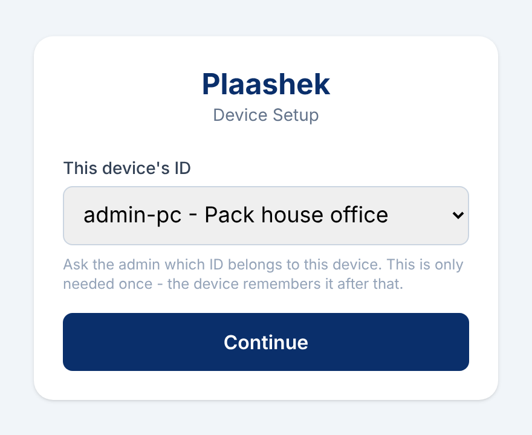
Device setup. Pick this device's station once; it remembers it.
Built for a working farm
Any hand-picked crop. Litchis, mangoes, avocados, citrus, macadamias, table grapes, stone fruit, pome fruit, berries or vegetables: if workers fill crates, bags or lugs and are paid by weight or count, Plaashek fits. Blocks, varieties and the pay rate are the farm's own.
Offline first. A crate is saved on the tablet the instant it is captured. No signal in the orchard changes nothing.
Badge scan, not a dropdown. Workers are identified by the QR code on their printed badge, so a crate can never land on the wrong name.
Colour tells the time. Loads turn from green to amber to red the longer they wait, in the field, at the gate and on the dashboard.
Own fruit and bought-in fruit. Outside suppliers' crews and deliveries are recorded alongside the farm's own, and paid or billed separately.
Hosted in South Africa. Your farm lives at yourfarm.plaashek.co.za on a South African hosting service, so the data stays in the country, encrypted in transit and at rest, and backed up every day. Nothing to install or look after on a farm PC.
Apple or Android. Plaashek runs in the browser on iPhone, iPad and Android phones and tablets, and installs to the home screen like an app. See Devices on the next page.
Devices
Works on Apple and Android
There is nothing to install from an app store. Each screen opens in the browser on an iPhone, iPad or any Android phone or tablet, and is added to the home screen once so it opens full screen like an app. The office uses whatever PC, Mac or phone it already has.
Recommended field devices: Ulefone RugKing 3 Pro and RugKing 4 Pro
For the picking stations we recommend a rugged Android phone rather than a consumer tablet. The RugKing fits one hand, its camera reads the worker badges, it lasts a full day of picking, and it shrugs off dust, rain and the drops a tablet does not survive. Both are low-cost devices, so losing one is not a disaster.
RugKing 3 Pro
RugKing 4 Pro
Best for
The slimmer, lighter choice for an induna who carries it all day.
The long-shift choice: a battery that lasts two days of capture without a charger.
Screen
6.56-inch HD+ display at 120 Hz, Corning Gorilla Glass 3. Big enough for the keypad, readable in sunlight.
Toughness
IP68 and IP69K water and dust sealing (submersion and pressure washing), MIL-STD-810H drop and shock rating.
Battery
5 700 mAh, about a full day of capture.
10 200 mAh, two days of capture; 18 W charging.
Processor and memory
Unisoc T7250 octa-core, 8 GB RAM, 128 GB storage.
Unisoc T7250 octa-core, 8 GB RAM, 256 GB storage.
Camera
48 MP rear camera with autofocus, which is what reads the worker's QR badge in a fraction of a second.
Connectivity
4G LTE with dual SIM, Wi-Fi, GPS, NFC and Bluetooth. Capture carries on with no signal and syncs when the phone finds the network again.
Software
Android 15.
Weight
286 g, 12.9 mm thin.
405 g, the weight of the bigger battery.
Any phone works. The RugKings are a recommendation, not a requirement. A farm that already has tablets or phones can use them as they are.
Pack house and office. The receiving screen runs on a tablet or phone at the gate; the office uses a PC, laptop or phone browser.
One address. Every device opens yourfarm.plaashek.co.za and picks its role once.
Badges, not logins. A field phone is paired to the farm once; workers identify themselves with their printed badge.
Specifications as published by the manufacturer at the time of writing. Check the current model before buying.
Field
Crate capture at the picking station
The induna's tablet. Scan the picker's badge, type the weight on the big keypad, save. The load card at the top counts crates and kilograms and shows how long the load has been standing.
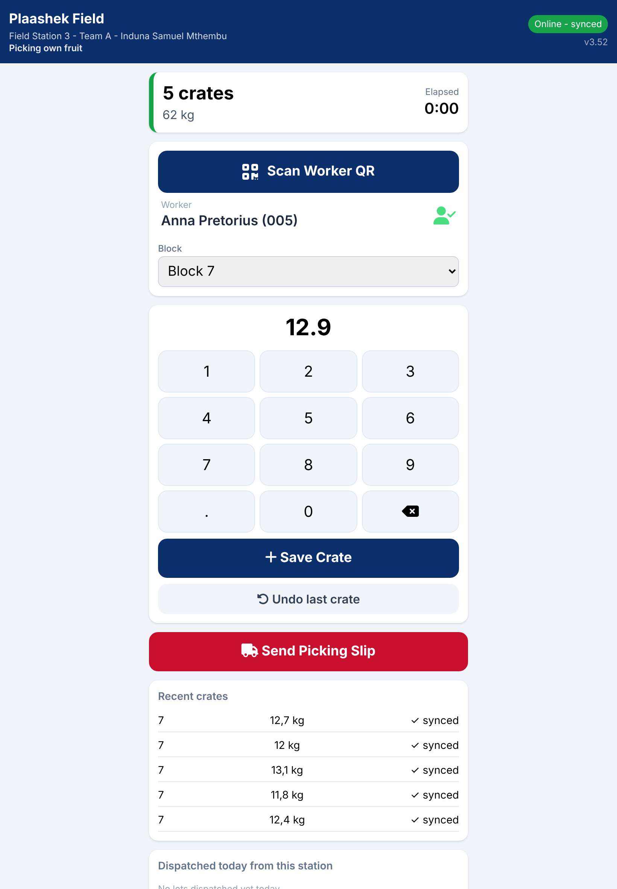
Capture: worker scanned, weight typed, five crates already on this load.
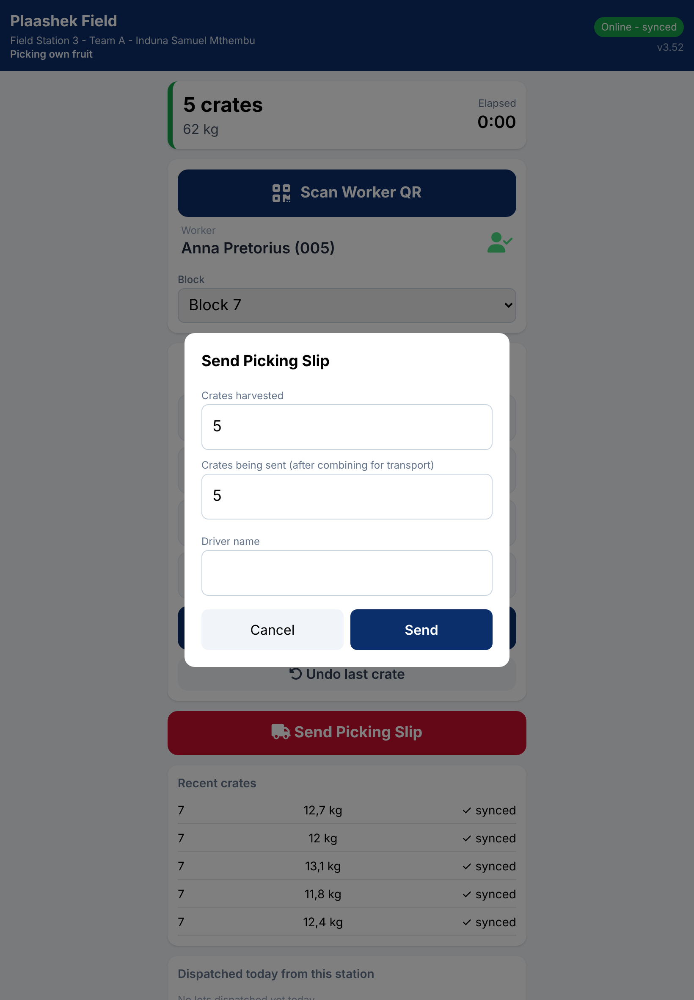
Send Picking Slip: the load goes to the pack house with the driver's name.
Saves before it syncs. Every crate is written to the tablet first and sent in the background. The pill in the header shows synced, syncing or offline with the number still pending.
One-handed keypad. Large keys, a decimal point and backspace. Undo takes back the last crate.
Block picker. The block being picked is chosen once and stays until it is changed.
Split loads. If the truck cannot take everything, send part of the load; the rest rolls onto a new slip automatically.
Recent crates and today's loads stay on screen so the induna can check what has gone.
Elapsed clock. The load card changes colour as the crates wait, so the team sees for themselves when a load should go.
Pack house
Receiving at the gate
Every load on its way is a card, oldest first, coloured by how long it has been in transit. Tap one to check it in with the actual crate count, the fruit's condition and who received it.
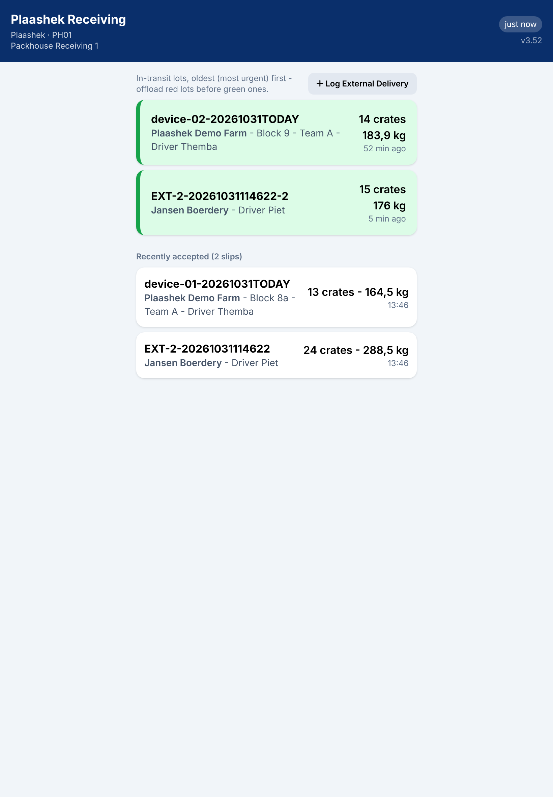
The in-transit queue, with the loads already accepted today below it.
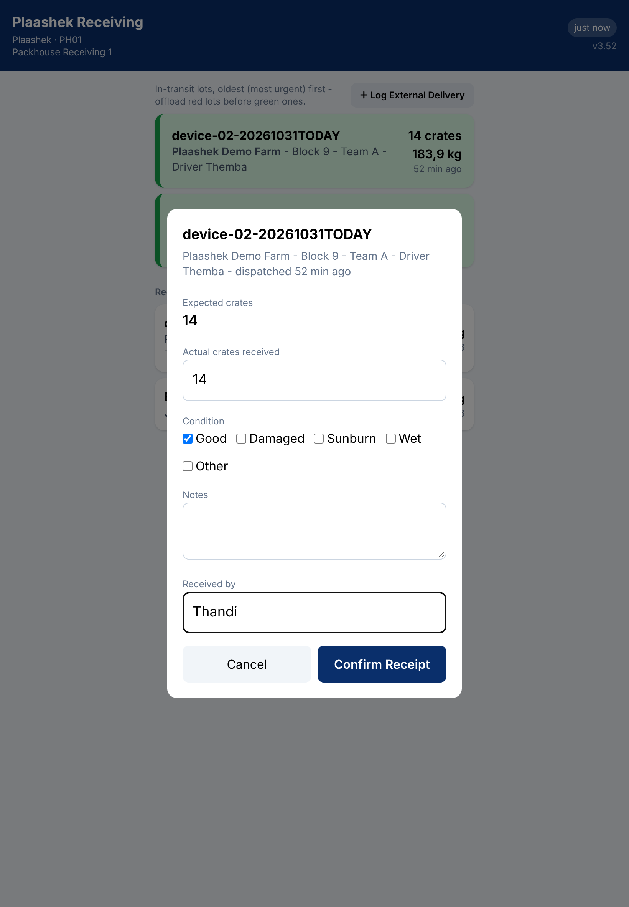
Receive: expected against actual, condition ticks, notes and the receiver's name.
Expected vs received. The slip's crate count is shown read-only beside what actually arrived, so shortfalls are recorded, not argued about later.
Condition at a glance. Good, damaged, sunburn, wet or other, any combination.
External deliveries. Fruit from another farmer is logged at the gate with supplier, crates, kilograms and driver, and flows into the same queue.
Received once only. A load cannot be checked in twice, however many times a button is tapped or a slip is re-sent.
Keeps its last list offline. If the Wi-Fi drops, the screen keeps showing the last queue it loaded, marked with its age.
Feeds the office. The receiving time and count are what the dashboard and reports call "received".
Admin
Dashboard
The office's landing screen: the whole farm for any period, with one filter bar. Today, this week, the season or any dates, for all suppliers or one.
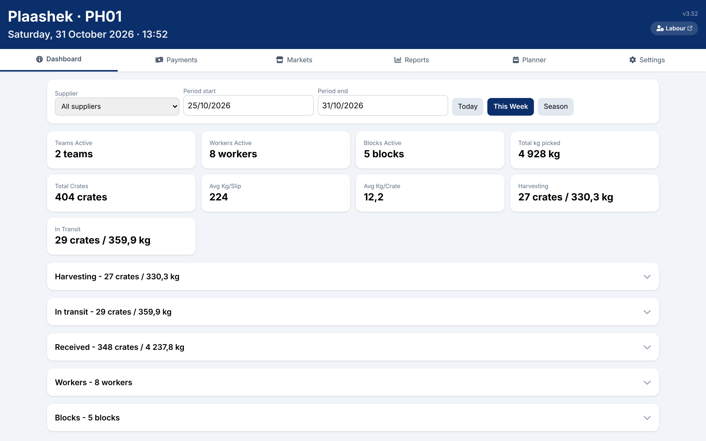
This week at a glance: teams, workers and blocks active, kilograms and crates, averages, and what is still harvesting or in transit.
Live KPI cards for the chosen period: total kg and crates, average kg per slip and per crate, loads harvesting and in transit.
Five drill-down lists. Harvesting, in transit, received, workers and blocks, each collapsed to its total until tapped.
Correct a crate. Open a received load to see its crates and fix a wrong worker or weight, with the change recorded.
Per block yields. Kilograms per tree and per hectare, from the block register.
Admin
Dashboard: workers and blocks
Expanding a list shows the detail rows. Workers are ranked by kilograms picked with the amount they have earned; blocks show their yield per tree and per hectare.
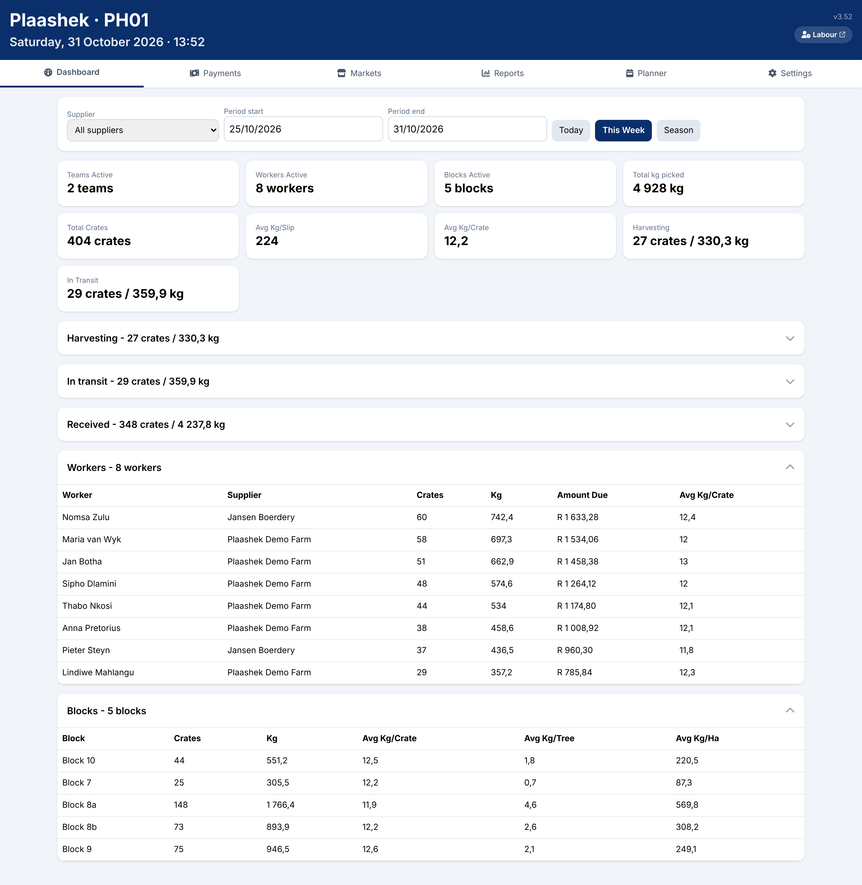
The Workers and Blocks lists open for the week.
Admin
Payments
Picker pay per kilogram, calculated from the crates captured in the field. Pick the period, press Calculate Wages, and export the wage sheet.
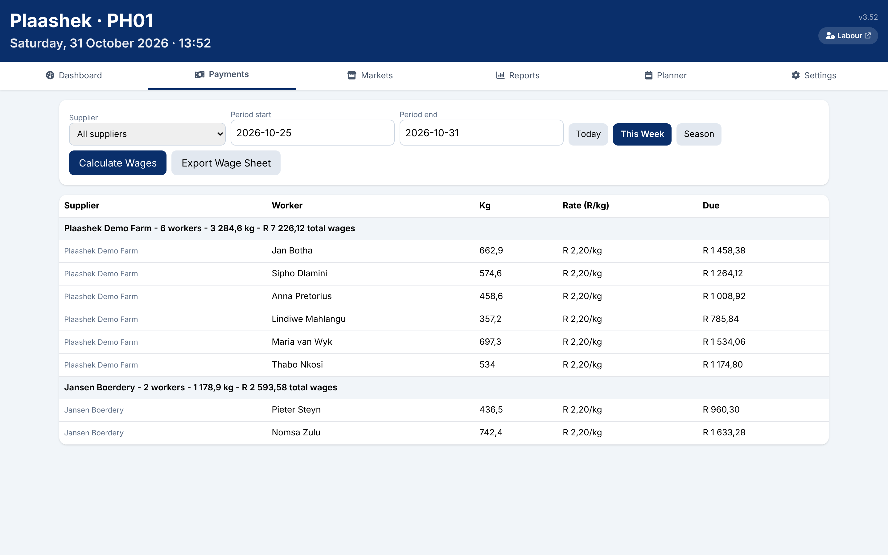
The week's wage run, grouped by supplier with a subtotal for each.
Rate per kg, or tiered rates, set in Settings and dated so the history stays right.
Grouped by supplier. The farm's own pickers and each outside crew have their own subtotal.
Export to Excel for the payroll office, in the same layout.
Never a R0 wage sheet. The run refuses to calculate without a rate, rather than printing zeros.
Admin
Reports
Every paper form the pack house used to fill in by hand, produced from the data already captured. One click downloads an Excel file for the chosen period.
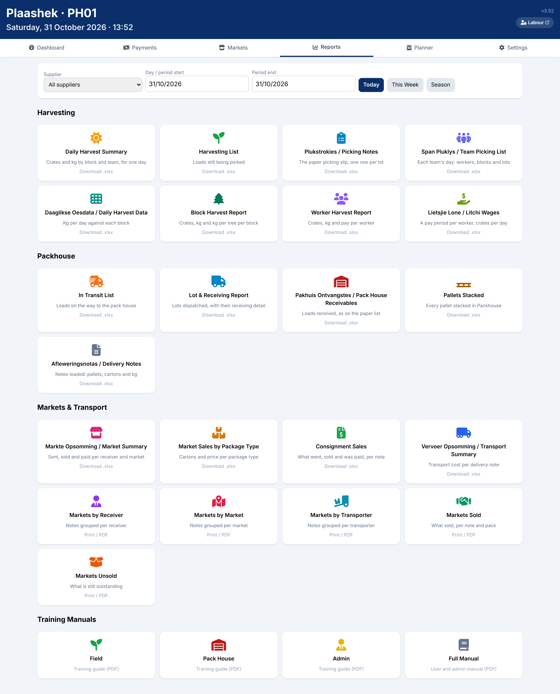
The report catalogue: harvesting, pack house, markets and transport, plus the training guides.
Harvesting: daily harvest summary, picking notes, team picking lists, daily harvest data, block and worker reports, wages.
Pack house: in-transit list, lot and receiving report, receivables, pallets stacked, delivery notes.
Markets and transport: sales per receiver, market and package type, consignment sales, transport cost, sold and unsold.
Afrikaans and English names on the forms the farm already knows.
Admin
Planner
The week's harvest plan. Tick the blocks to pick and the days, type what is available, and the plan spreads the kilograms across the days. What was actually picked shows in red under each day as the week runs.
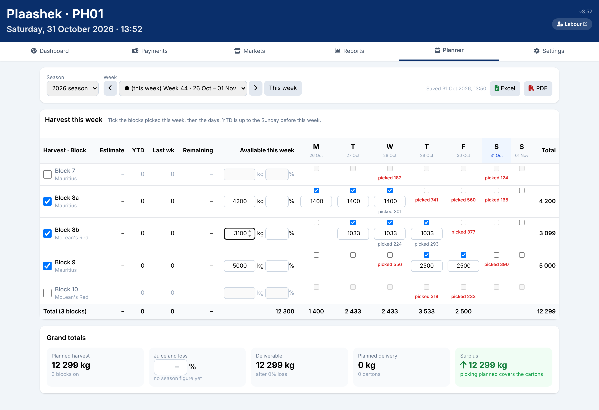
Week 44 planned: three blocks on, kilograms shared over the ticked days, grand totals below.
Plan against actual. Picked figures appear under the day they were picked, planned or not.
Hold a day's figure. Type a number on a day and the rest is re-shared around it.
Season estimate and deliveries join the plan when the owner's crop estimate and the pack-house modules are installed.
Excel and PDF of the week's plan for the morning meeting.
Admin
Master data
Workers, teams, blocks, devices and suppliers live in Settings. Each list imports and exports as a spreadsheet, so the season's register is set up in minutes.
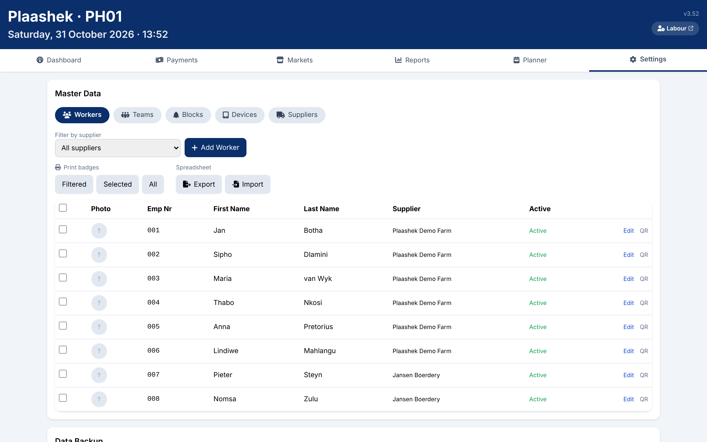
Workers: the register with supplier, active flag, photo and QR badge.
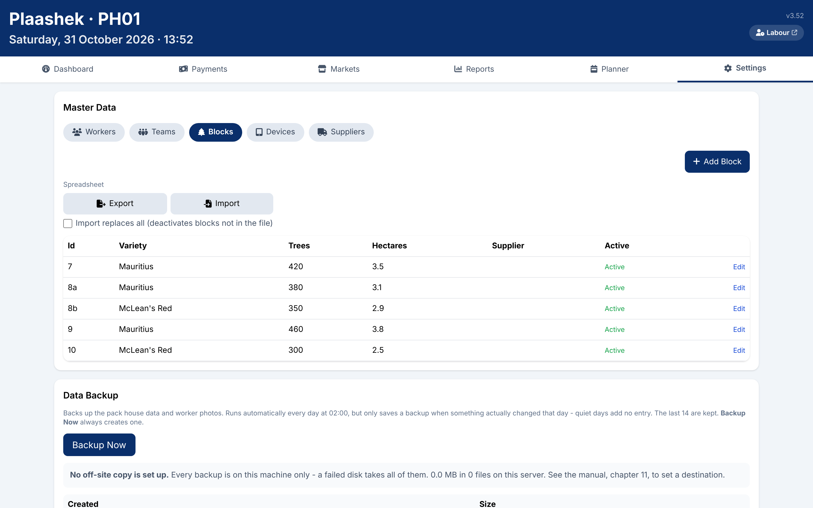
Blocks: variety, trees and hectares, which drive the yield figures.
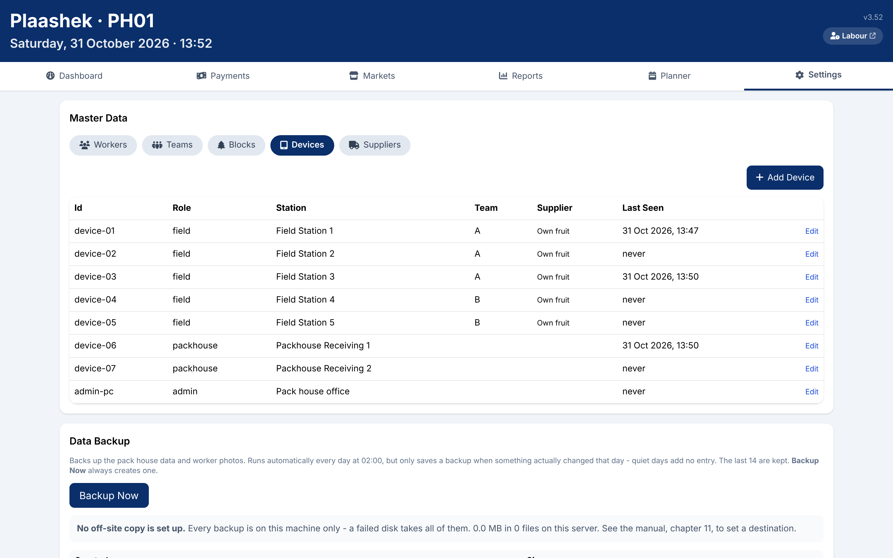
Devices: each tablet's role, station, team and when it last synced.
Admin
Worker badges
Print a badge for any worker, a filtered list or everyone. The QR code is what the field tablet scans, and the same badge works at the pack-house time clock.
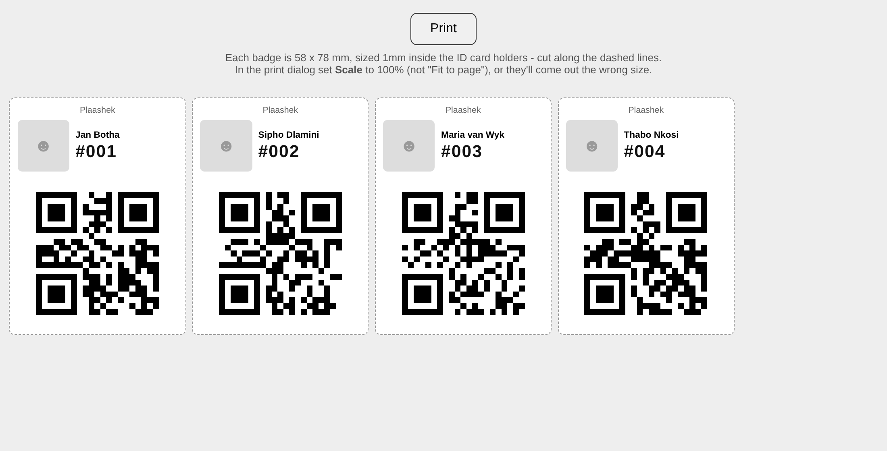
Badges sized for standard ID card holders, with the worker's photo when one is on file.
Also included
Hosting and data
Each farm has its own address, yourfarm.plaashek.co.za, and its own database on a South African hosting service. Data is encrypted in transit and at rest, backed up daily, and never shared between farms.
Markets
With the pack-house module, delivery notes come through to the Markets tab, where the market's statement and the transporter's invoice are typed in, or read automatically from the agents' emailed invoices.
Weather
Current conditions in the header from the farm's weather station or its GPS position.
Updates
New releases are rolled out on the hosting service; there is nothing for the farm to install. Each screen shows the version it is running.
Training
A training guide per role (Field, Pack House, Admin) and a full manual, opened from the Reports tab.
Plaashek Harvest is one module of the Plaashek suite. The pack-house, time-clock, owner's view, cattle and farm-notes modules each follow in their own section.